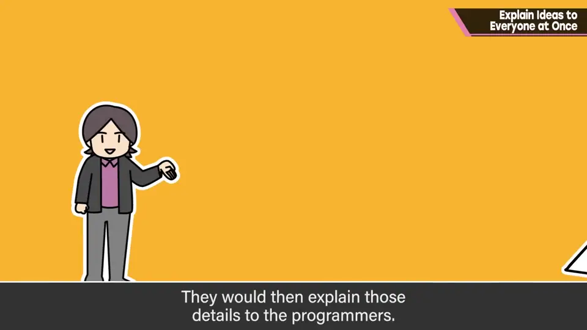
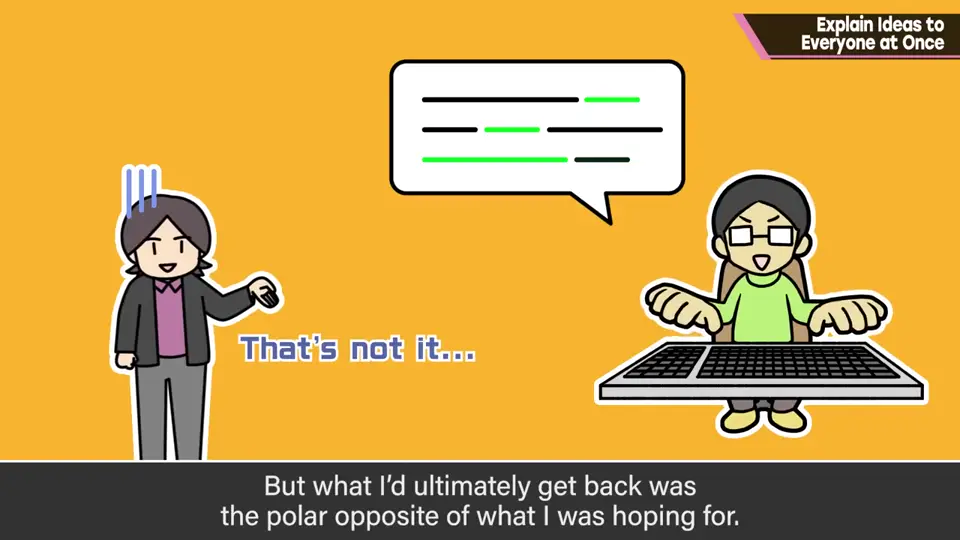
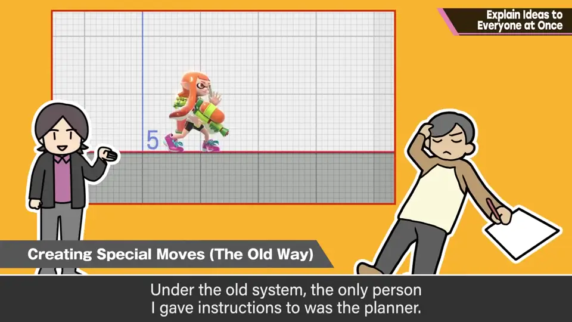
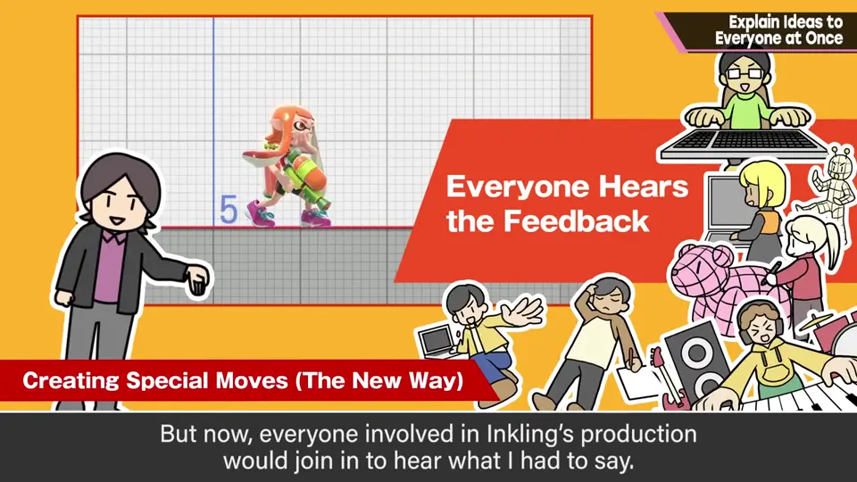
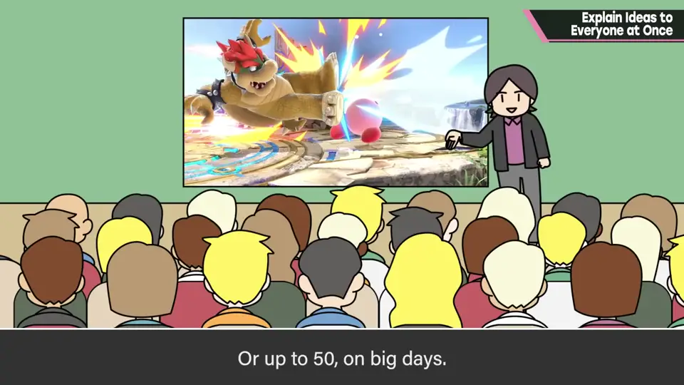
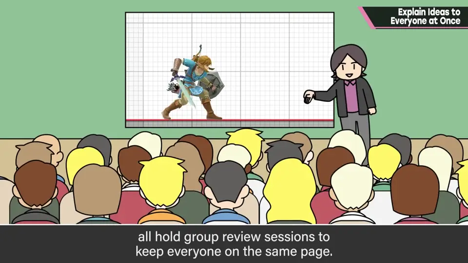
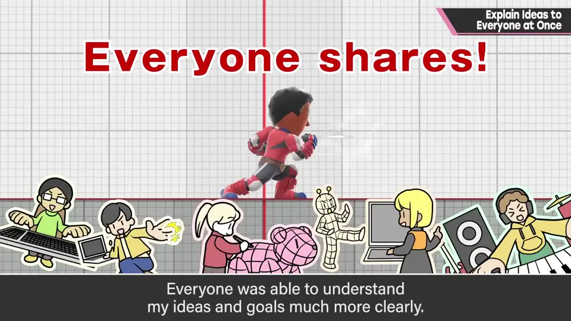

速览
樱井在《新·光神话 帕尔提娜之镜》的开发现场有个反省：比如总监向策划传达某个要素该怎么做，策划再传给程序，结果解释和成品有时以 180 度相反的方向回来。新光神话的开发体制像「混合编队」，各员工的文化差异太大，他以往的指示方式有时完全不起作用。于是从《任天堂明星大乱斗 for 3DS / Wii U》的开发起，他建立了一种体制：他讲的监修内容，由与该要素相关的全体员工一起听。例如监修斗士 Inkling 的必杀技规格书，以前只告诉策划就够了，但现在基本上请所有与 Inkling 相关的员工参加——策划、程序、模型、动作、特效、声音等相关人员及其组长一起听对企划的监修。他的座位周围有片空地，备有能映出开发机画面和 PC 画面的大屏幕，监修时员工把椅子排开来听，大约 30 人，多时 50 人；与该部门无关的人也可以自由旁听。他边用屏幕边用麦克风讲解，讲完也接受提问。另外，斗士模型、原画、场景模型、动作等也召开全体相关者的检查会：听听自己负责以外的部分如何被检查，可作为参考——这在大乱斗4之前就这么做了。这种方式会增加每位员工被占用的时间，乍看浪费很多，但效果超群：员工能更深入地理解包括意图在内的内容；对规格或表现迷茫时，不论职种都知道该往哪个方向；在员工容易不知道自己在做什么的大型作品中，也有助于通风。前提是要迅速推进，但他推荐这种方法，员工风评也不错。题外话：聚集的空地上他总放着零食，自己买来补充让大家随便吃，转为远程办公后就很久没有了——篮子里 Bourbon（布尔本）的零食偏多，「Bourbon 最强」。
1. 层层转述的问题 0:03
樱井在《新·光神话 帕尔提娜之镜》的开发现场有一个反省：比如身为总监的他向策划传达某个要素该怎么做，策划再传达给程序。


结果，解释和成品有时会以180 度相反的方向回来。
新光神话的开发体制像是「混合编队」，各员工的文化差异太大，他以往的指示方式有时完全没效果，很伤脑筋。
2. 新体制：全员一起听 0:44
于是从《任天堂明星大乱斗 for 3DS / Wii U》的开发开始，他建立了一种体制：他讲的监修内容，由与该要素相关的全体员工一起听。
例如监修斗士 Inkling 的必杀技规格书时，以往只要告诉策划就行；但现在基本上请与 Inkling 相关的所有员工参加——策划、程序、模型、动作、特效以及声音等相关人员和组长，一起听他对企划的监修。


3. 现场的样子 1:25
他的座位周围有一片空地，备有可以映出开发机画面和 PC 画面的大屏幕。有监修时，员工就在那里排开椅子听，大约 30 人，多的时候有 50 人。


规则是：与该部门无关的人也可以自由旁听。他边用屏幕边拿麦克风讲解，讲完后也接受提问。
另外，斗士模型、原画、场景模型、动作等，也召开全体相关者的检查会来监修：看看自己负责以外的部分如何被检查，作为参考。这一点在大乱斗4之前就这样做了。
4. 看似浪费，效果超群 2:17
这种方式会增加每位员工被占用的时间，乍看似乎浪费很多。

在员工容易不清楚自己在做什么的大型作品里，这也有助于让团队通风。前提条件之一是要迅速推进，但这很值得推荐，员工的风评也不错。
5. 题外话：零食 2:54
题外话：员工聚集的空地上，樱井总是放着零食，自己买来补充，让大家随便吃。转为远程办公后就很久没有了。
自测题
1. 《新·光神话》开发时遇到了什么问题？
总监→策划→程序层层转述，解释和成品有时完全相反；各员工文化差异太大。 0:03
2. 从《大乱斗 3DS/Wii U》开始的新体制是什么？
监修内容由与该要素相关的全体员工一起听（策划、程序、模型、动作、特效、声音等）。 0:44
3. 这种做法的代价和好处是什么？
代价是占用更多时间；好处是理解更深、各职种都知道方向、大型项目更通风。 2:17